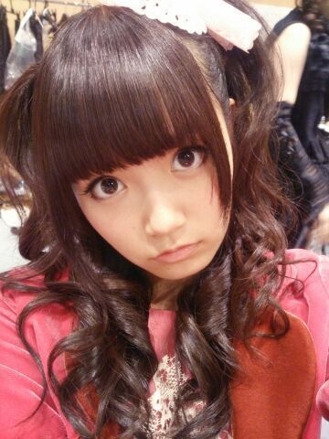

| 2013/11 02 Sat | ひめたん(*>ω<*)そ の363 |
7thシングル表題曲「バレッタ」
MV解禁されましたー

いえーい！
見てくださいこの
いくちゃん (生田絵梨花ちゃん)の屈託のない笑顔。
いくちゃんがとっても楽しそうなので
あたしも楽しいです(o^ω^o)
みなさんもうチェックしていただけましたかー？
表題曲のMVの中に自分がいるなんて
本当に光栄なことです(´:ω:｀)
ちょーいーちょーいー登場するから
よかったらみつけてみてねー
高めツインがぴょこぴょこしてたらそれひめたん。
そうそうMVの中で
おにんぎょうさんになったんだよー
ひめたんの人生における大きな目標が
「おにんぎょうさんになる」だから
ちょっと叶ったみたいで嬉しい(´ω`)
なんかイマドキのJK風おにんぎょうさん......
おひとつ、いかが ？
なんてねーぐひっ

ハロウィン２日目は
ハーフツインふわふわ。
キリッとしたひめたん。キリひめたん(｀・∀・´)

 手紙をハガキで送ったらボツかなぁ？
手紙をハガキで送ったらボツかなぁ？
ボツなんてないないない！
届いたら読みますよー！
ありがとーうね( ^^ )
なに丼が一番かわいいと思う？
月見丼とかかわいいと思う(*^O^*)
ひめたんは 美術館とか、
そういうところって行きますか？？
プライベートでは行かないかなあー
ステキな美術館知ってたら教えてくださーい♪
ブログのコメントよりも、
お手紙書く方がうれしいかな？
そ、そんなことないですっ！
どっちも嬉しいし、それぞれに良さがあるよねっ
お手紙だと受け取るのに時間がかかってしまうので
そーゆー意味でブログコメは身近な感じがするし
でも手書きの文字もステキだし。
ひめたんのビーム食べたらどうなりますか？
ひめたんは食べたことがないけど
みなさんがきゅんきゅんしたらいいなー
失神したらごめんなさいね(・∀・)
広島でまだ行ったことなくて
行ってみたい場所とかは？？
ちっちゃい頃に行ったこと多分あるんだけど
記憶がないって意味で
みろくの里に行きたいです＊
◎11/2 TBS 開運音楽堂
◎11/2 日経エンタテインメント！
チェックよろしくお願いします∩^^∩

(＊´・ω・＊)
コメント(376)
2013/11/02 00:18